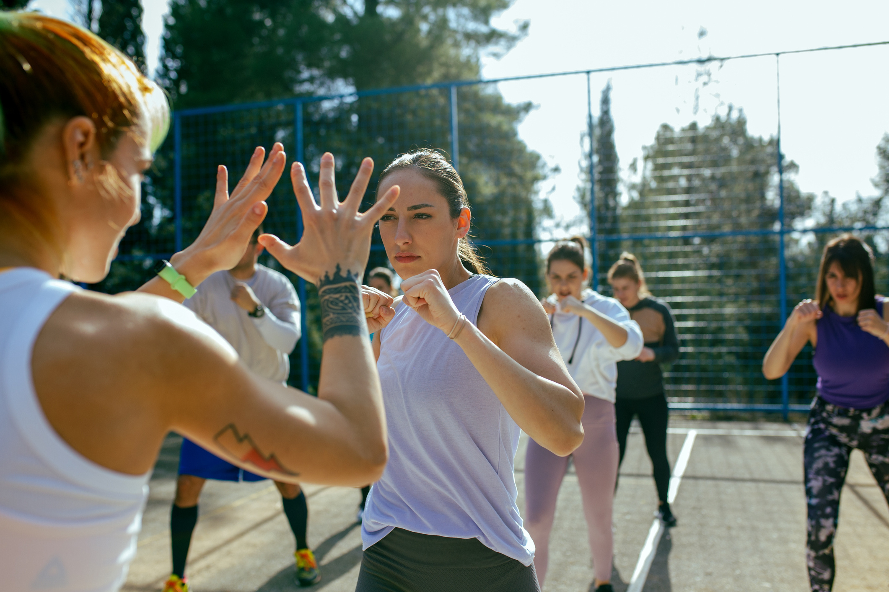

Introduction to Self-Defense
Self-defense is about protecting yourself from harm. It involves awareness, prevention, and physical techniques. Learning self-defense is crucial not only for your personal safety but also for building confidence and understanding how to respond in various situations.
Why Self-Defense?
Understanding self-defense helps you to:
- Protect yourself and others from potential threats.
- Increase your confidence in handling dangerous situations.
- Learn to recognize and avoid potentially harmful situations.
- Understand your legal rights and responsibilities regarding self-defense.
Common Self-Defense Scenarios
Self-defense techniques can be applied in various scenarios, including:
- Walking alone at night.
- Confrontations in public places.
- Personal attacks or harassment.
- Handling aggressive behavior from others.
Basic Self-Defense Techniques
While each situation is unique, some basic techniques include:
- Using your voice to assert yourself and attract attention.
- Employing physical techniques like strikes, blocks, and escapes.
- Identifying and using available resources for self-defense (e.g., pepper spray, alarms).